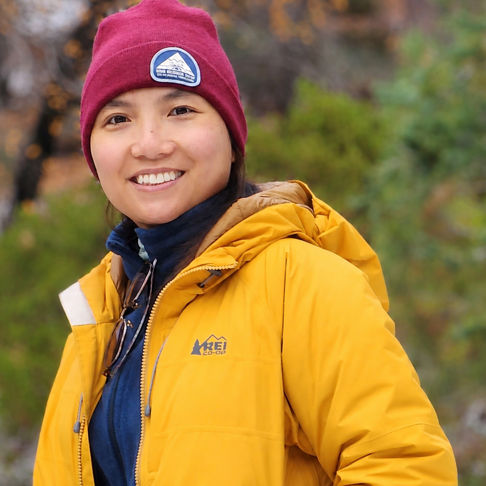

Trang Tran
Paleoclimatology · Paleoceanography · Organic Geochemistry

Trang Tran
Ph.D. Candidate in Geosciences
University of Arizona
University of Arizona
I am a Ph.D. candidate in Geosciences at the University of Arizona. My research interests lie in paleoclimatology, paleoceanography, and organic geochemistry. I study past climate change using organic geochemical proxies and climate model simulations — investigating how ocean temperatures and hydroclimate respond to elevated atmospheric CO₂ and abrupt climate shifts on geological timescales.
"The past is never past — but it is alive in our present and will define our future."
In academic publications, my name appears as T. Tran.
Education
- Ph.D. candidate — University of Arizona, USA
- M.Sc. Geological Sciences — CSU Long Beach, USA
- M.Sc. Climate Change — VNU-SIS, Vietnam
- B.Sc. Geology — VNU-HUS, Vietnam